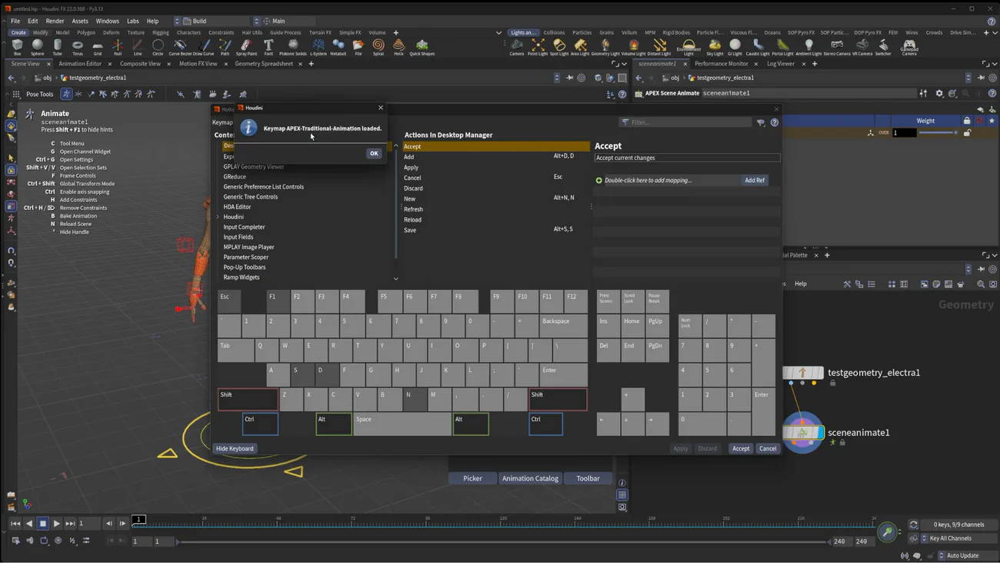

Maya のキー配置に変える — APEX Traditional Animation キーマップ
出典: Houdini 22 | How to Set Maya Animation Keymap （SideFX 公式「Houdini 22 How-To」の1本 / Houdini 22 / 4:10 / 英語）。 このページは、上記の動画を見ながら自分用にまとめた日本語の学習メモです。SideFX 公式の翻訳ではありません。
何が問題なのか
Houdini の既定は T = 移動 / R = 回転 / E = スケール / K = キーです。
Maya や Blender から来ると W で移動モードに入ろうとして、
ワイヤーフレーム表示が切り替わるだけという事故が起きます。
手が覚えているキーが全部別のことをするので、慣れるまでかなり辛いところです。
H22 にはこれを Maya 流に置き換える公式キーマップが入っています。 自分でホットキーを1つずつ設定する必要はありません。
手順
1. 検証用のキャラを置く
Tab→ Test Geometry: Electra を配置します。 Houdini に付属する完成済みのリグ付きキャラなので検証に便利です- ダブルクリックで中に入り、出力を Skin Surface から APEX Scene に変更します。 これをやらないとアニメートできません
Tab→ APEX Animate（Scene Animate）を配置し、 第1出力を入力に繋いでディスプレイフラグを Scene Animate に立てます- Scene Animate を選んだ状態でビューポートで
Enter（または Animate アイコン）を押すと、 コントロールと設定の UI が出ます
2. キーマップを切り替える
- Edit → Hotkeys を開きます
- Key Map の Houdini の下にある APEX Traditional Animation を選びます
- OK → Accept
- 「Keymap APEX-Traditional-Animation loaded.」と出れば適用完了です

キー配置の変化
| 操作 | 既定（Houdini） | APEX Traditional |
|---|---|---|
| 移動 | T | W |
| 回転 | R | E |
| スケール | E | R |
| キーを打つ | K | S |
動作確認
- メインコントロールを選び
Wで移動モード →Sでキー - フレーム48へ移動して Electra を前に出し
S Eで回転モード。数値入力で180と打ってからS
ついでに読める情報
スクリーンショットの左側に Pose Tools のヒント一覧が出ています。 キーマップを変えてもこちらは有効なので、あわせて覚えておくと速くなります。
| キー | 内容 |
|---|---|
C | ツールメニュー |
G | チャンネルウィジェット |
F | フレーム |
H | コンストレイント追加 |
B | ベイク |
N | シーン再読み込み |
この回のまとめ
- Edit → Hotkeys → Key Map → Houdini → APEX Traditional Animation で切り替わります
W移動 /E回転 /Rスケール /Sキー になります- 検証には Test Geometry: Electra が便利です。ただし出力を APEX Scene に変えるのを忘れないようにします
- Pose Tools のホットキー（
C/G/F/H/B/N）はキーマップを変えても有効です